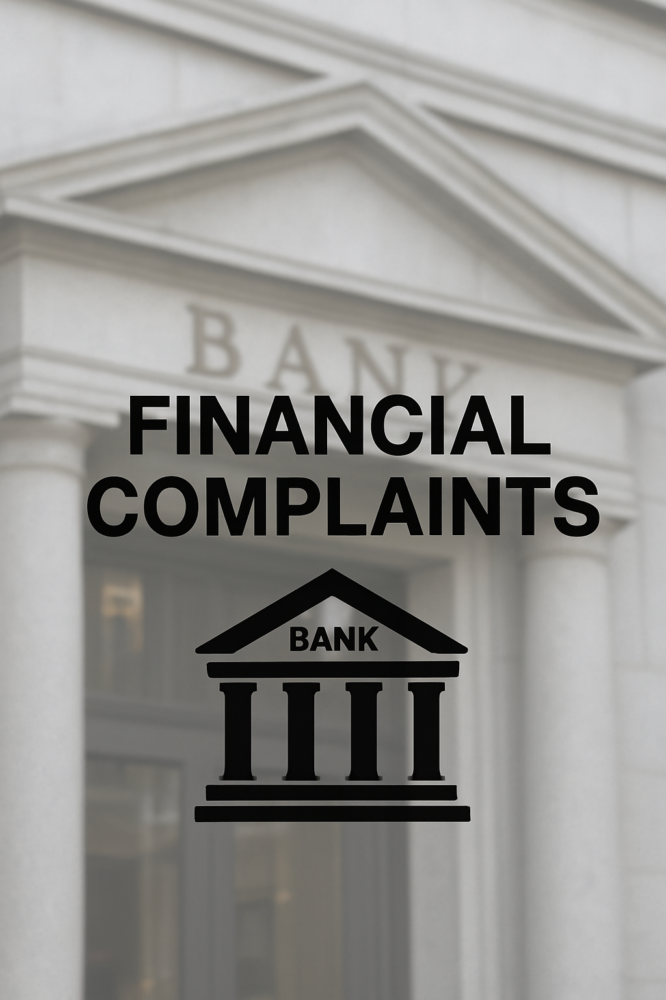

More Projects

Financial Complaints
Examining customer grievances related to financial products and services. Identifies recurring issues, assesses service quality, and analyzes complaint patterns and resolution timelines to improve compliance and customer satisfaction.
View Project
Emergency Room
Examining patient flow, treatment times, and emergency case patterns to evaluate ER efficiency. Helps healthcare teams understand peak hours, resource utilization, and common emergencies to optimize staffing and reduce wait times.
View ProjectAccident Data Analysis
Examining road incident trends, casualty severity, and contributing factors to evaluate transportation safety. Identifies high-risk locations, common causes, and vulnerable road users to support data-driven safety decisions.
View Project
Patient Survey
Helping healthcare organizations understand patient satisfaction and care experience. Evaluates feedback on communication, treatment quality, wait times, and staff behavior to guide service improvements and increase patient trust.
View Project